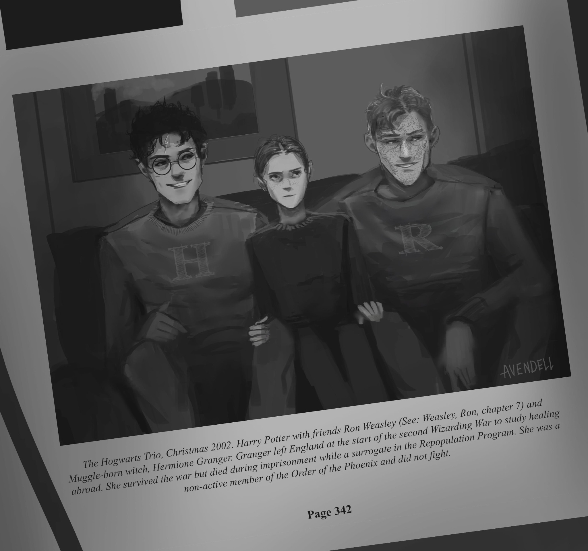
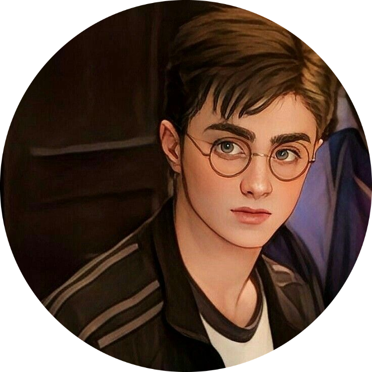
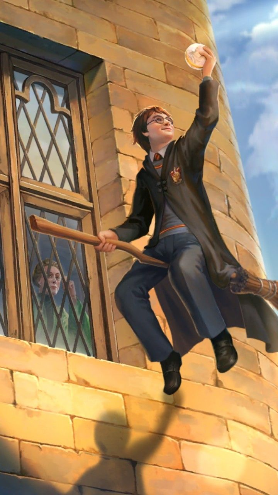

MANACLED

“I have warned you. If something happens to you,
I will personally raze the entire Order. That isn't a
threat. That is a promise. Consider your survival as
much a necessity to the survival of the Resistance as
Potter's. If you die, I will kill every last one of them.”-Manacled por Senlinyu.
Desde el lanzamiento de Harry Potter por JK Rowling hace
más de 20 años, los fanáticos han creado realidades e historias
alternativas que muestran una delicadeza narrativa compleja e
intrincada. Así nació Dramione; una pareja romántica fanfictional
formada por Hermione Granger y Draco Malfoy. El Dramione Fandom
es la realeza de fanfiction, y conocemos la posesión más preciada
en su reino: Manacled por Senlinyu.
 Manacled by Senlinyu es un fanfiction intensamente complejo, oscuro
y estimulante que es posiblemente el mejor fanfiction escrito en
cualquier género de todos los tiempos.
Manacled by Senlinyu es un fanfiction intensamente complejo, oscuro
y estimulante que es posiblemente el mejor fanfiction escrito en
cualquier género de todos los tiempos.
Sinopsis
Harry Potter está muerto. Después de la guerra, con el fin de fortalecer el poder del mundo mágico, Voldemort promulga un esfuerzo de repoblación. Hermione Granger tiene un secreto de la Orden, perdido pero oculto en su mente, por lo que es enviada como sustituta esclavizada al Alto Reeve hasta que su mente pueda ser descifrada.
Personajes
Harry Potter
 A Harry Potter a menudo se le dice que tiene los ojos verdes de su madre y el cabello desordenado y la personalidad de su padre
Hermione Granger
Los padres de Hermione Granger son muggles, ¡y ambos dentistas!
Ronald Weasley
Ron es el hijo menor de la familia Weasley, el segundo más joven en general después de su hermana Ginny.
Draco Malfoy
Draco, su madre y su padre viven juntos en un enorme edificio llamado Malfoy Manor. Sí, son ricos.
Albus Dumbledore
 Dumbledore es un hombre de muchos logros, ¡pero rechazó el cargo de Ministro de Magia!
Severus Snape
Enseñar Pociones no fue la primera opción de Snape: ha solicitado el puesto de profesor de Defensa contra las Artes Oscuras muchas veces ...
Minerva McGonagall
La profesora McGonagall es una Animagus, lo que significa que puede convertirse en un gato. Incluso tiene marcas en forma de gafas alrededor de sus ojos cuando es un gato.
Rubeus Hagrid
Aunque Hagrid fue expulsado de Hogwarts, se le permitió permanecer como guardián.
Lord Voldemort
Como estudiante de Hogwarts, Lord Voldemort era un estudiante modelo e incluso quería volver a trabajar allí.